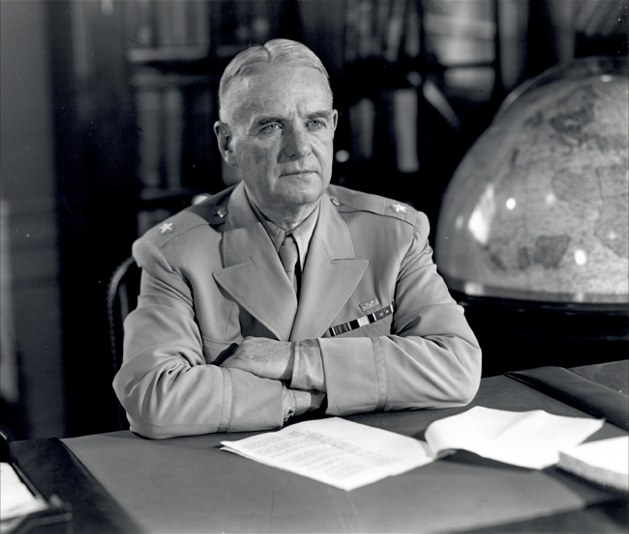
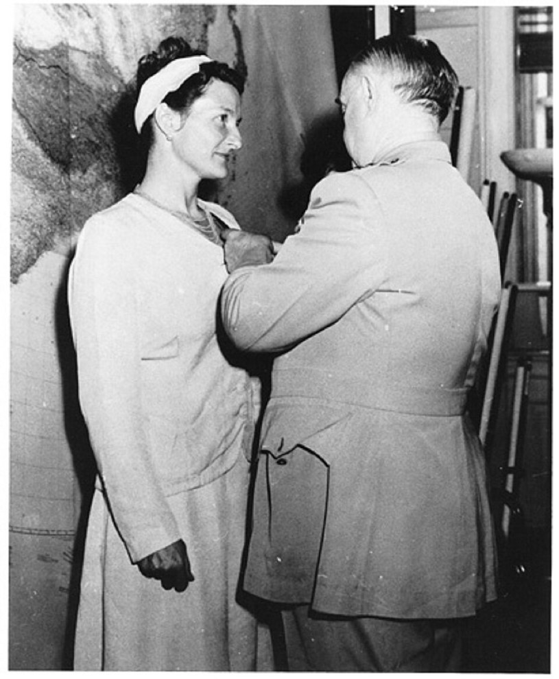
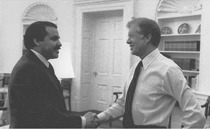
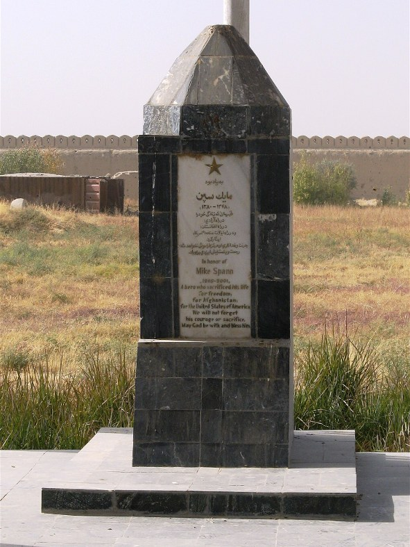
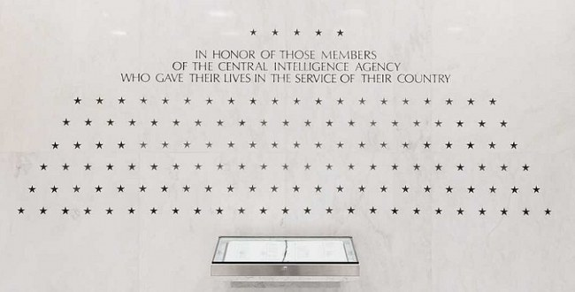
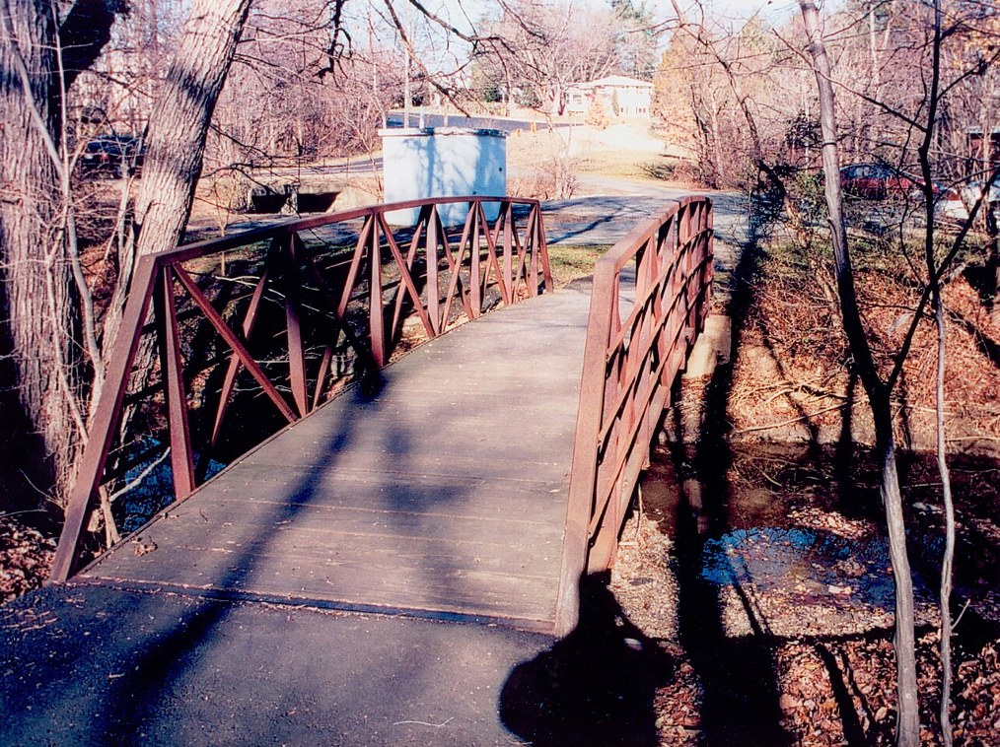
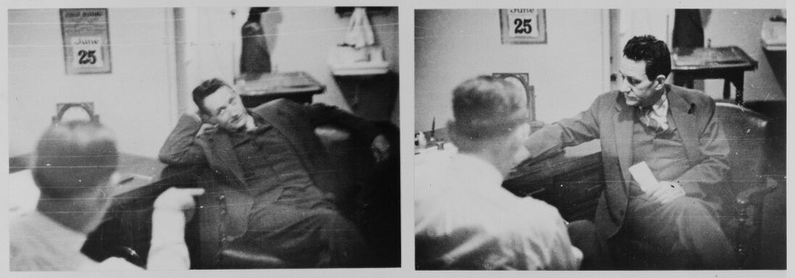
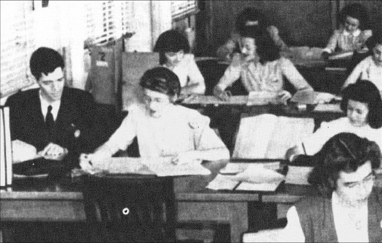
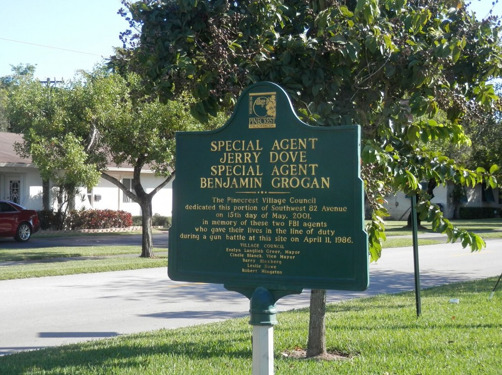

Savvy Security LLC · Thanksgiving 2026
Thankful for the Quiet Ones
Nine stories from the CIA and FBI: what these Americans did, why it mattered, and what their work still teaches anyone who defends a network.
Most of the people in this article never asked for credit. Some of them never got it while they were alive. This Thanksgiving, we want to say thank you to them, and to every agent, officer, analyst and service member doing the same quiet work today.
Thanksgiving is a day for counting what you have and remembering who made it possible. For most of us that list starts at the dinner table. But if you work in security for long enough, it grows. It grows to include people you will never meet, whose names you may never learn, who stood between this country and the people trying to hurt it.
This week marks twenty-five years since a CIA officer named Mike Spann became the first American killed in combat in Afghanistan. That anniversary is part of why this article exists. It is a thank-you note, but it is also a history lesson, because almost every hard idea in modern cybersecurity was learned first by someone in this article, usually the hard way.
So we picked nine stories: five from the CIA and the OSS that came before it, and four from the FBI. For each one we tell you what they did, why it mattered, and what it still teaches a small business, a school district or a family trying to keep their data safe. Everything here comes from the agencies' own published histories, their professional journal Studies in Intelligence, inspector general and congressional reports, and peer-reviewed research. The full list is at the bottom.
A note before we begin. Savvy Security LLC is an independent company. This article is our own tribute. It is not affiliated with, sponsored by or endorsed by the Central Intelligence Agency, the Federal Bureau of Investigation or any other government agency. The photographs are public domain U.S. government images or openly licensed images, credited under each one.
1. William J. Donovan: the man who argued that intelligence has to be shared

Before there was a CIA, there was Bill Donovan. Born in Buffalo in 1883 and trained as a lawyer at Columbia, he went to France in the First World War with New York's famous “Fighting 69th,” which served as the 165th Infantry. He was wounded three times and received the Medal of Honor for leading his men near Landres-et-Saint-Georges in October 1918.1
The nickname came from those same troops. According to the CIA's own telling, drawn from Douglas Waller's biography, a soldier he couldn't see called out that the men weren't as wild as he was. “Wild Bill” stuck for the rest of his life, though he publicly claimed to dislike it.1
His real contribution came later. In July 1941, President Roosevelt made him Coordinator of Information, and in 1942 that office became the Office of Strategic Services, the OSS. On November 18, 1944, Donovan sent Roosevelt a memo proposing a permanent, central intelligence service for the country after the war. As Allen Dulles, then Director of Central Intelligence, described it in 1959, the plan was one in which “coordination and centralization are placed at the policy level.”2
The OSS was disbanded after the war. But after hearings to which Donovan contributed important testimony, Congress wrote a Central Intelligence Agency into the National Security Act of 1947. In 1957, President Eisenhower awarded him the National Security Medal.2 Donovan landed at Utah Beach on D-Day in his sixties, by the way, because of course he did.1
Intelligence nobody shares is just data. Donovan's whole argument was that the pieces were scattered across departments and nobody was putting them together. That is exactly the problem in most organizations today. The firewall logs live with IT, the strange invoice lives with accounting, and the odd phone call lives with the front desk. Somebody has to own the whole picture.
For a small business, that can be as simple as one person who collects every “this seems weird” report, and a habit of reporting online fraud to the FBI's Internet Crime Complaint Center at ic3.gov so your piece joins everyone else's.
2. Virginia Hall: the spy the enemy couldn't catch

Virginia Hall had already lost her left leg below the knee, after a hunting accident, when the war began. She named her prosthetic leg “Cuthbert” and did not let it slow her down.3
By August 1941, Britain's Special Operations Executive had recruited and trained her and sent her back into France under journalistic cover. There she joined the French resistance network known as the Heckler circuit, where, in the words of the CIA's reviewer, “her performance amazed SOE.” When the circuit was betrayed to the Gestapo, she escaped by crossing the Pyrenees on foot in winter.3
When the British refused to risk sending her back, she quit and joined the American OSS. She trained as a radio operator and went back into France disguised as an elderly woman, and she served there until V-E Day. She received the Distinguished Service Cross, the only civilian woman so honored during World War II, in a private ceremony. After the war she joined the Central Intelligence Group and then the newly created CIA, where she worked in covert action until she retired at the then-mandatory age of 60. She died in 1982.3
Assume the network will be betrayed, and plan so one betrayal doesn't take everyone down. Resistance circuits learned, at a terrible price, that people who don't need to know each other shouldn't. In security we call that compartmentalization, least privilege and network segmentation. If one laptop or one password falls, it should not open every door in the building.
And notice her answer to being shut out: she found another way back in and did the job anyway. Resilience is a security control too.
3. Tony Mendez: the master of disguise who rescued six Americans

On November 4, 1979, the U.S. Embassy in Tehran was seized. Six Americans slipped away and hid for months with Canadian Ambassador Ken Taylor and Canadian embassy official John Sheardown. Getting them out fell to Antonio Mendez, the CIA's top specialist in disguise and false documents.4
His solution sounds like a movie because it later became one. Mendez set up a fake Hollywood production company, Studio Six Productions, complete with an office on a Hollywood studio lot, for a science fiction film called Argo. The six would leave Iran as Canadian members of a film crew scouting locations. He and a colleague arrived in Tehran on January 25, 1980, and on the morning of January 28 the whole group walked through the airport and boarded a Swissair flight to Zurich.4 The CIA kept the operation secret until 1997, when it revealed the story as part of its 50th anniversary.
Mendez wrote the account himself in Studies in Intelligence, and two lines from it read like they were written for today's security teams:
“…legends hold up best when their details closely follow the actual experience or background of the user.”
“…the mental attitude and demeanor of the subject is as important as the technical accuracy of the tradecraft items.”
Identity is the attack surface. Mendez proved that a good enough story, told with confidence, gets through checkpoints. Criminals have learned the same lesson. The fake vendor email, the “CEO” who calls about an urgent wire, and now the cloned voice or deepfake video all work because they look and sound right.
The defense hasn't changed: verify through a second channel you already trust. Call the vendor back at the number on file, not the one in the email. Agree on a family code word. Never let urgency stand in for proof.
4. Johnny Micheal “Mike” Spann: the first star of a new war

Mike Spann joined the Marine Corps in December 1991 and served eight years, rising to captain. He earned a criminal justice degree from Auburn University and joined the CIA in 1999 as a paramilitary officer.5
Weeks after September 11, he was in Afghanistan. On November 25, 2001, he was interviewing prisoners at the Qala-i-Jangi fortress near Mazar-e Sharif when they revolted. His last act, according to the CIA, was to “warn an Agency colleague of the imminent danger.” He was 32 years old, and he was the first American killed in combat in Afghanistan.5
CIA Director George Tenet called him a “quiet warrior” who “placed his own life in jeopardy to save the lives of others.” He was posthumously awarded the Intelligence Star, and his star was the 79th carved on the Agency's Memorial Wall.5

That wall began in 1974 with 31 stars. By its 50th anniversary in 2024 it held 140.6 Below it, the Book of Honor lists names, but some officers can't be named even in death, so their entries hold only a star. Think about that for a moment. Some of the people this country owes the most are people it is still not allowed to thank by name.
Security is about people, not boxes on a checklist. Every policy we write and every alert we chase exists to protect somebody. Spann's story is the reminder that on the far end of this work there are human lives, and that the people who protect them carry real risk.
5. Jeanne Vertefeuille and Sandy Grimes: the team that found Aldrich Ames
In the mid-1980s, the CIA's agents inside the Soviet Union began disappearing, one after another. Some of them, including the GRU general Dmitri Polyakov whose story we told here, were executed. Someone was betraying them, and the CIA asked Jeanne Vertefeuille to find out who.7
Vertefeuille had joined the Agency as a typist in 1954 and worked her way into counterintelligence. She led a small team of five. The break came in August 1992, when her colleague Sandy Grimes noticed that Aldrich Ames, a CIA officer, had made large bank deposits right after meetings with a Soviet official. Ames was arrested on February 21, 1994.7 TIME magazine later called Vertefeuille “the little gray-haired lady who just wouldn't quit.” She served the Agency for 58 years.
The Senate Intelligence Committee's report on the case is a study in missed signals. Ames began spying for the Soviets in April 1985 and later admitted giving up “virtually all Soviet agents of the CIA and other American and foreign services known to me.” The FBI estimated that he spent at least $1,397,300 between 1985 and 1993, while his CIA take-home pay over the same period was $336,164. He kept each cash deposit under $10,000. A CIA employee had flagged in November 1989 that he seemed to be living beyond his means.8 The committee's conclusion was blunt:
“Ultimately, however, it was Ames's sudden affluence that made him the focus of investigators.”8
The insider threat is real, and the clues are usually there. Researchers who study insider incidents point out the core problem: an insider already has legitimate access, so the usual defenses at the door don't apply.15 What catches them is patient people connecting small signals over time.
One caution from the research: money is not the only motive anymore. A Defense Department study of American espionage cases found that “since 1990, money has not been the primary motivation for espionage.” Only 7% of the post-1990 group spied solely for money, compared with 74% in the 1980s, while 57% were driven solely by divided loyalties.16 Watching bank accounts is not a strategy. Watching behavior and access is.
6. The FBI team that caught Robert Hanssen

The FBI had its own traitor, and he was one of its own counterintelligence agents. Robert Hanssen spied for Moscow on and off for more than twenty years. The Justice Department's Inspector General traced three periods: 1979 to 1981, 1985 to 1991, and 1999 to 2001.10 Working separately, he and Ames betrayed some of the same people, Polyakov among them.
The FBI caught him by doing the slow, careful work. In 2000, the FBI and CIA obtained original Russian documentation on the mole. The Bureau then put roughly 300 people on the case, quietly placed a young investigator named Eric O'Neill in Hanssen's office as his assistant, and watched. On February 18, 2001, agents arrested Hanssen at Foxstone Park after he left a package at the “Ellis” drop. He pled guilty to 15 counts that July and was sentenced to life in prison in May 2002. He died in 2023.9
The Inspector General's review is required reading for anyone who runs an IT system. It found that Hanssen used the FBI's own case database against it: “Hanssen also frequently searched the ACS system for references to his own name and address.” The system kept audit trails, but “the FBI did not conduct audit trail reviews absent an allegation of wrongdoing,” and the audit function was “rarely utilized before Hanssen's arrest.”10
A log nobody reads is not a control. Hanssen left footprints in the system for years. The data was there. Nobody looked. Today the same lesson applies to every Microsoft 365 tenant, every firewall and every shared drive: turn on audit logging, and then actually review it, or pay someone to.
And watch for the specific behavior Hanssen showed: people searching for themselves, poking at investigations, or pulling records they have no reason to need. The FBI's answer, in the Inspector General's recommendations, was real-time auditing and enforcing need-to-know. That's good advice for a ten-person office too.
7. William Sebold and the agents who ran the Duquesne case

Some heroes are ordinary people who make one brave choice. William Sebold was a German-born American who became a U.S. citizen in 1936. While visiting Germany in 1939, he was pressured into working for German military intelligence. Instead of going along quietly, he went to the U.S. Consulate in Cologne and told them everything.11
The FBI turned that one decision into a case that brought down an entire spy ring. Sebold arrived in New York in February 1940 under the name “Harry Sawyer” and played the part the Germans expected. FBI technicians built him a shortwave radio station on Long Island, and from May 1940 the Bureau ran the spies' own communications channel to Germany for 16 months, sending more than 300 messages and receiving about 200. Sebold's Manhattan office was fitted with hidden microphones and a two-way mirror.11
In the end, the FBI arrested 33 members of the ring led by Frederick Duquesne. Nineteen pleaded guilty and the other 14 were convicted on December 13, 1941, less than a week after Pearl Harbor. Together they were sentenced to more than 300 years in prison.11
Two lessons. First, the whole case started because one person reported an approach instead of hiding it. Make it easy and safe for your people to say “someone tried to recruit me,” or “I clicked something I shouldn't have.” Shame keeps people quiet, and quiet is what attackers count on.
Second, the FBI didn't rush. It controlled the adversary's channel and learned everything it could before acting. When you discover an intruder in a network, the instinct is to pull the plug immediately. Sometimes that's right. But a calm, planned response that understands the full scope first usually catches more.
8. Robert Lamphere, the Venona codebreakers, and a reused key

On February 1, 1943, the Army's Signal Intelligence Service began a small, secret effort to read encrypted Soviet cables. Soviet spy traffic was protected with one-time pads, which, used correctly, can't be broken. But they weren't used correctly. Under the pressure of the German advance on Moscow, the Soviets produced about 35,000 pages of duplicate key.12 The official history puts it simply:
“The flaw in the Soviet messages resulted from the manufacturers' duplication of one-time pad pages.”13
Meredith Gardner, a linguist working with the Army's codebreakers, began reading the messages in 1946. From October 1948, he worked hand in hand with FBI Special Agent Robert Lamphere, who took the fragments and ran down the real people behind the cover names. The partnership identified the physicist Klaus Fuchs in 1949 and Julius Rosenberg in 1950, and in all helped identify more than 200 people.1213 The program stayed secret until it was declassified in July 1995.
Encryption almost never fails because of the math. It fails because of how people use it. In 1949, Claude Shannon proved that “perfect secrecy is possible” but requires as many possible keys as messages, and that the one-time pad achieves it.14 The Soviets had perfect math and broke it by reusing key.
The same mistake shows up today as reused passwords, reused encryption nonces, shared admin accounts and the one API key copied into ten apps. Never reuse a secret. Use a password manager and turn on multi-factor authentication everywhere it's offered.
9. Benjamin Grogan and Jerry Dove: the day that changed the FBI

On April 11, 1986, FBI agents on surveillance in southwest Miami stopped two men wanted for a string of violent bank and armored car robberies. The suspects came out firing. Special Agents Benjamin Grogan and Jerry Dove were killed, and five other agents were wounded. Special Agent Edmundo Mireles Jr., himself wounded, ended the fight.1718
At the 20th anniversary memorial, then-Deputy Director John Pistole described them as “Grogan, the 23-year veteran,” and “Dove, the Bureau rookie who long dreamed of working at the FBI.” Dove, born in Charleston, West Virginia, had studied at Marshall University and West Virginia University.1718
The FBI did not just mourn. It changed. Agents were issued semi-automatic handguns to replace their revolvers, training improved, the psychological effects of being shot at were studied, and Mireles received the first-ever FBI Medal of Valor.18 Thirty years later, Director James Comey put it plainly: “We needed better body armor because the bad guys were firing rounds that could pierce the vests we were using at the time.”19
Honor the loss by fixing what failed. The FBI's response to Miami is a model for every incident review. They asked what went wrong with equipment, training and preparation, without blaming the agents who fought, and then they changed all three.
After a breach, a ransomware scare or even a near miss, do the same. Write down what happened, what worked, what didn't and what you'll change. Then change it.
Why Savvy Security is thankful
We do cybersecurity for regular people and small businesses. We are not spies and we don't pretend to be. But nearly everything we teach was first paid for by people like the ones in this article:
- Donovan taught us that information has to be shared and coordinated to matter.
- Virginia Hall taught us to compartmentalize and to keep going when the network is compromised.
- Tony Mendez taught us that identity can be forged, so it must be verified.
- Mike Spann and the 140 stars on the wall remind us that this work protects human lives.
- Jeanne Vertefeuille and Sandy Grimes taught us that insiders get caught by patient people who notice small things.
- The Hanssen team and the Inspector General taught us that logs only help if someone reads them.
- William Sebold taught us that one honest report can bring down a whole operation.
- Lamphere and Gardner taught us that one reused key can unravel perfect encryption.
- Ben Grogan and Jerry Dove taught us that the best way to honor a loss is to learn from it.
We are also thankful for everyone in this story whose name we don't know. The analysts, the technicians who built a radio station on Long Island, the forgers and disguise artists, the surveillance teams, the support staff, and the families who sat at Thanksgiving tables with an empty chair. And we're thankful for the service members of every branch who stand the same kind of watch in uniform.
If you know someone who does this work, in an agency, in uniform or on a corporate security team that got paged on a holiday, today is a good day to tell them thank you. Most of them will shrug it off. Say it anyway.
Happy Thanksgiving from all of us at Savvy Security.
More from the archive: Codename TRIGON, the Soviet diplomat who mailed the Kremlin's secrets to Washington, and The Soviet General Who Spied for America, the agent Ames and Hanssen betrayed.
Sources
Every numbered source below was read for this article. Where the CIA or FBI published a history in its own words, we cite that page. Links were checked on November 26, 2026.
Scholarly and peer-reviewed
- 14. Shannon, C. E. (1949). Communication theory of secrecy systems. Bell System Technical Journal, 28(4), 656–715. doi:10.1002/j.1538-7305.1949.tb00928.x.
- 15. Homoliak, I., Toffalini, F., Guarnizo, J., Elovici, Y., & Ochoa, M. (2019). Insight into insiders and IT: A survey of insider threat taxonomies, analysis, modeling, and countermeasures. ACM Computing Surveys, 52(2), 30:1–30:40. doi:10.1145/3303771. Preprint: arXiv:1805.01612.
- 16. Herbig, K. L. (2008). Changes in Espionage by Americans: 1947–2007 (Technical Report 08-05). Monterey, CA: Defense Personnel Security Research Center (PERSEREC). Full text: archived government document (PDF).
Studies in Intelligence and official histories
- 1. Central Intelligence Agency (2020). The legend of Wild Bill: How Donovan got his nickname. cia.gov.
- 2. Dulles, A. W. (1959). William J. Donovan and the national security. Studies in Intelligence, 3(3). Reprinted by the CIA Center for the Study of Intelligence. cia.gov (PDF).
- 3. Peake, H. (2026). Review of The Mysterious Virginia Hall, by Claudia Friddell. Studies in Intelligence, 70(1), Extracts, March 2026. cia.gov (PDF).
- 4. Mendez, A. J. (1999–2000). A classic case of deception. Studies in Intelligence, 43(3), Winter 1999–2000. cia.gov (PDF).
- 5. Central Intelligence Agency. Honoring heroes: Johnny Micheal Spann. cia.gov.
- 6. Central Intelligence Agency (2024). Sacred stars: CIA's Memorial Wall turns 50. cia.gov.
- 7. Central Intelligence Agency (2016). Spy catcher: Jeanne Vertefeuille. cia.gov.
- 9. Federal Bureau of Investigation. Famous cases and criminals: Robert Hanssen. fbi.gov.
- 11. Federal Bureau of Investigation. Famous cases and criminals: Duquesne spy ring. fbi.gov.
- 12. National Security Agency. VENONA: An overview. Cryptologic Almanac, 50th Anniversary Series. media.defense.gov (PDF).
- 13. Benson, R. L., & Warner, M. (Eds.) (1996). Venona: Soviet Espionage and the American Response, 1939–1957. National Security Agency and Central Intelligence Agency. cia.gov (PDF).
- 17. Federal Bureau of Investigation. Wall of Honor: Jerry Dove. fbi.gov.
- 18. Pistole, J. S. (2006, April 11). Remarks at the Miami Shootout 20th Anniversary Memorial Service. Federal Bureau of Investigation. fbi.gov.
- 19. Federal Bureau of Investigation (2016). Director observes 30th anniversary of “Miami Shootout.” fbi.gov.
Government reports
- 8. U.S. Senate Select Committee on Intelligence (1994). An Assessment of the Aldrich H. Ames Espionage Case and Its Implications for U.S. Intelligence. 103rd Congress, 2nd Session. irp.fas.org.
- 10. U.S. Department of Justice, Office of the Inspector General (2003, August 14). A Review of the FBI's Performance in Deterring, Detecting, and Investigating the Espionage Activities of Robert Philip Hanssen (unclassified executive summary). oig.justice.gov.
Further reading (not quoted above)
- Troy, T. F. (1981). Donovan and the CIA: A History of the Establishment of the Central Intelligence Agency. CIA Center for the Study of Intelligence.
- Haynes, J. E., & Klehr, H. (1999). Venona: Decoding Soviet Espionage in America. Yale University Press.
- Grimes, S., & Vertefeuille, J. (2012). Circle of Treason: A CIA Account of Traitor Aldrich Ames and the Men He Betrayed. Naval Institute Press.
- Mendez, A. J., & Baglio, M. (2012). Argo: How the CIA and Hollywood Pulled Off the Most Audacious Rescue in History. Viking.
What we couldn't pin down. Sources disagree slightly on some details, and we chose the cautious version:
- The CIA's own pages differ on exactly when Jeanne Vertefeuille's mole-hunt team was formed, so we say only that it followed the losses of the mid-1980s.
- The story of how Donovan got his nickname comes from Douglas Waller's biography, as retold by the CIA; it is a soldier's anecdote, not a documented record.
- The Memorial Wall count of 140 stars is the CIA's figure as of 2024. Stars may have been added since, which is why we give the dated number.
Image credits. Photos of Donovan (National Archives), Virginia Hall and Tony Mendez (CIA), the CIA Memorial Wall (CIA), the Ellis dead drop (FBI), and Frederick Duquesne (FBI print, Library of Congress) are works of the U.S. federal government in the public domain. The Mike Spann memorial photo was released into the public domain by its photographer, Cflorcke. The Grogan and Dove street marker photo is by Aquariuspl, licensed CC BY-SA 3.0. All were obtained via Wikimedia Commons; some were cropped. Use of government photos does not imply endorsement by any agency.
Thank someone who keeps you safe today. Then share this with them.